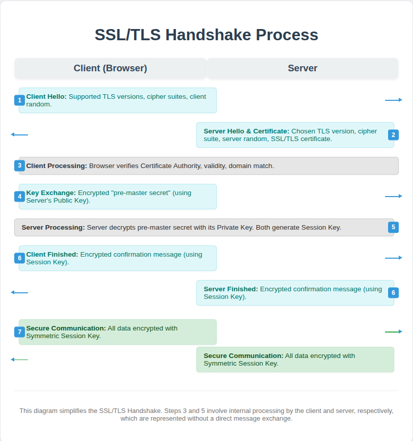

You are viewing this page over an encrypted HTTPS connection. However, if your browser showed a warning (e.g., "Your connection is not private"), it's because this server is using a self-signed certificate. In a production environment, certificates are issued by trusted Certificate Authorities (CAs).
This demonstration highlights the browser's role in verifying certificates!
SSL (Secure Sockets Layer) and its successor, TLS (Transport Layer Security), are cryptographic protocols designed to provide communication security over a computer network. They establish an encrypted link between a web server and a web browser, ensuring that all data passed between them remains private and integral.
When you see "https://" in your browser's address bar and a padlock icon, it means the website is using SSL/TLS to secure your connection. This is vital for protecting sensitive information like login credentials, credit card numbers, and personal data from eavesdropping and tampering.
The process of establishing a secure connection begins with a series of steps known as the "SSL/TLS Handshake." This handshake uses a combination of public-key cryptography and symmetric-key encryption.
 A visual representation of the SSL/TLS Handshake process.
Let's Encrypt is a free, automated, and open Certificate Authority (CA) provided by the Internet Security Research Group (ISRG). Its mission is to make it possible for all websites to use HTTPS, promoting a more secure and privacy-respecting web.
Unlike traditional CAs that often charge for certificates, Let's Encrypt provides certificates free of charge. They automate the process of certificate issuance and renewal via the ACME (Automatic Certificate Management Environment) protocol.
The most common way to use Let's Encrypt is with their client tool called **Certbot**.
Let's Encrypt certificates are valid for 90 days but can be easily renewed automatically by Certbot, making them a very popular choice for securing websites.